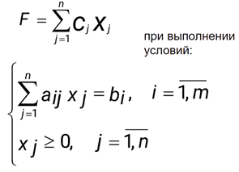
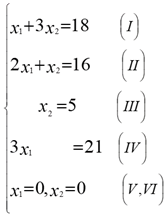
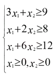
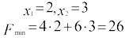

Линейное программирование
Краткое содержание
Линейное программирование - это метод оптимизации, где цель состоит в том, чтобы найти наилучший (максимальный или минимальный) исход в зависимости от некоторых линейных ограничений.
Постановка задачи ЛП:
- Основная задача ЛП: Определить значения переменных, соответствующие определенным ограничениям.
- Допустимое решение - набор значений, соответствующих условиям задачи.
- Оптимальное решение - допустимое решение, при котором функция F достигает своего максимума или минимума.
Примеры задач:
- Задача о распределении ресурсов: Изготовление продукции P1 и P2 используя ресурсы S1, S2, S3, S4. Цель - максимизировать прибыль от реализации продукции.
- Задача о составлении рациона: Определение количества кормов I и II, чтобы минимизировать стоимость, сохраняя нужную питательность.
Постановка задачи ЛП:
- Строим прямые, соответствующие ограничениям, в системе координат.
- Определяется многоугольник допустимых решений.
- Используя вектор и прямую, находим точку максимума или минимума функции.
- Пример решения: в задаче о распределении ресурсов максимальная прибыль равна 24 единицам при изготовлении 6 единиц продукции P1 и 4 единиц P2.
Постановка задачи ЛП
Общая задача ЛП: Найти значения переменных x1,x2….xn, удовлетворяющих ограничениям
Допустимое решение задачи линейного программирования - это набор значений x1,x2….xn, удовлетворяющих условиям задачи.
Множество всех допустимых решений называется областью допустимых решений.
Допустимое решение, при котором линейная целевая функция F принимает свое максимальное (минимальное) значение, называется оптимальным.
Стандартной задачей линейного программирования называется задача, которая состоит в определении максимального (минимального) значения функции.

Задача о распределении ресурсов
Для изготовления 2-х видов продукции P1и P2 используется 4 вида ресурсов S1, S2, S3, S4
| Вид ресурса |
Запас ресурса |
Число единиц ресурсов, расходуемых на изготовление единиц продукции |
|
|
P1 |
P2 |
| S1 |
18 |
1 |
3 |
| S2 |
16 |
2 |
1 |
| S3 |
5 |
0 |
1 |
| S4 |
21 |
3 |
0 |
Прибыль от реализации продукции Р1–2, Р2–3.
Требуется составить такой план производства продукции, при котором прибыль от реализации будет максимальной.
x1 x2 – число единиц продукции Р1 и Р2.
Система ограничений будет следующая:
x1+3x2 ≤ 18
2x1+x2 ≤ 16
x2 ≤ 5
3x1 ≤ 21
x1 ≥ 0 x2 ≥ 0
Прибыль составит: F = 2х1+3х2 → max
Имеется два вида корма I и II, содержащие питательные вещества S1, S2 и S3.
| Питательные вещества |
Необходимый минимум питательных веществ |
Число единиц питательных веществ в 1 кг корма |
|
|
I |
II |
| S1 |
9 |
3 |
1 |
| S2 |
8 |
1 |
2 |
| S3 |
12 |
1 |
6 |
Стоимость 1 кг корма I и II соответственно равна 4 и 6 условных единиц.
Необходимо составить дневной рацион нужной питательности, причем затраты на него должны быть минимальными.
Обозначим через x1 и x2 соответственно количество килограммов корма I и II в дневном рационе.
Получим следующую модель:
Графический метод решения задач линейного программирования
Рассмотрим стандартную задачу линейного программирования с двумя переменными (n=2), состоящую в определении максимального значения функции при условиях:
Задача линейного программирования состоит в нахождении такой точки многоугольника решений, в которой целевая функция принимает экстремальное значение.
Исходная задача линейного программирования состоит в нахождении такой точки многоугольника решений, в котором целевая функция принимает максимальное значение. Эта точка является одной из вершин многоугольника решений.
Теорема: Если задача ЛП имеет оптимальный план, то ЦФ достигает своего максимального значения в одной из вершин выпуклого многогранника решений.
Если ЦФ достигает максимального значения более, чем в 1-й вершине многогранника, то она достигает это значение и в любой точке, являющейся выпуклой линейной комбинацией этих вершин (в любой точке на прямолинейном отрезке, соединяющем эти вершины).
Алгоритм решения графическим способом
В системе координат строятся прямые, уравнения которых получаются в результате замены в ограничениях знаков неравенств на знаки точных равенств.
Находятся полуплоскости, определяемые каждым из ограничений задачи. Определяется многоугольник решений.
Строится вектор: C = (c1, c2)
Строится прямая: c1x1 + c2x2 = const
Строится вектор: C = (c1, c2)
Строится прямая: c1x1 + c2x2 = const
Прямая передвигается параллельно самой себе в направлении вектора , в результате чего находят точку (точки), в которой целевая функция принимает максимальное значение или устанавливают неограниченность сверху функции на множестве допустимых решений.
Определяются координаты точки максимума функции и вычисляется значение целевой функции в этой точке.
Задача о распределении ресурсов
Необходимо определить максимум функции при условиях:
Решение
Построим многоугольник решений. Для этого в системе ограничений знаки неравенств заменим на знаки точных равенств и построим полученные прямые:

Ответ:
Следовательно, при изготовлении 6 единиц продукции P1 и 4 единицы продукции P2, предприятие получит максимальную прибыль, равную 24 единицам.
Задача II
Составление рациона.
при условиях:

Решение
Построим многоугольник решений. Для этого в неравенствах системы ограничений знаки неравенств заменим на знаки равенств:
Ответ:

Дневной рацион должен включать в себя 2 кг корма I и 3 кг корма II, при этом затраты будут составлять 26 единицам.